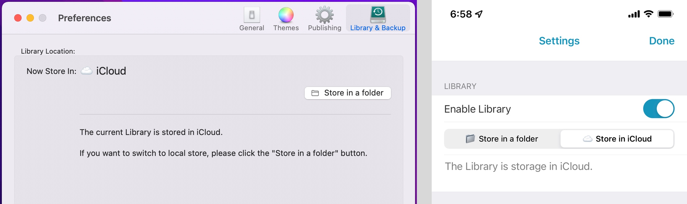
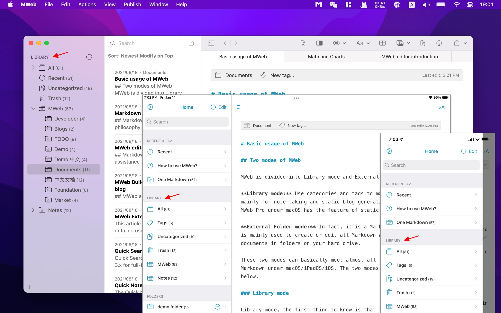
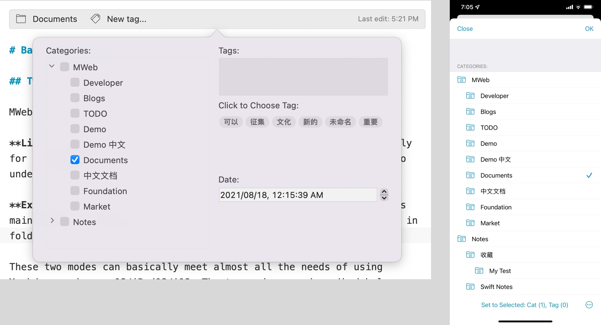
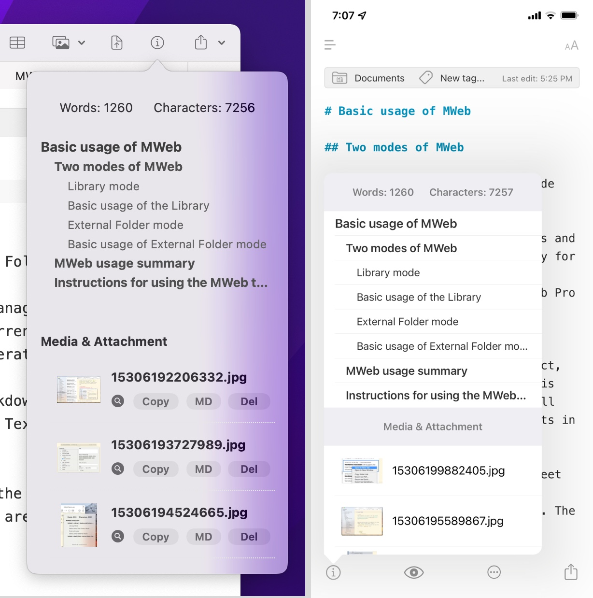
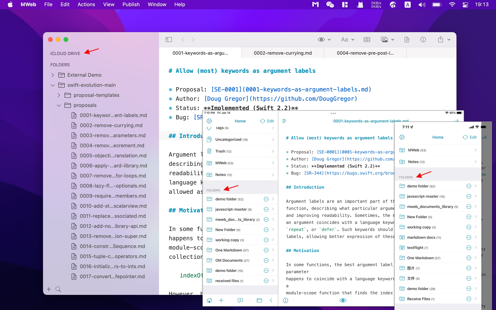
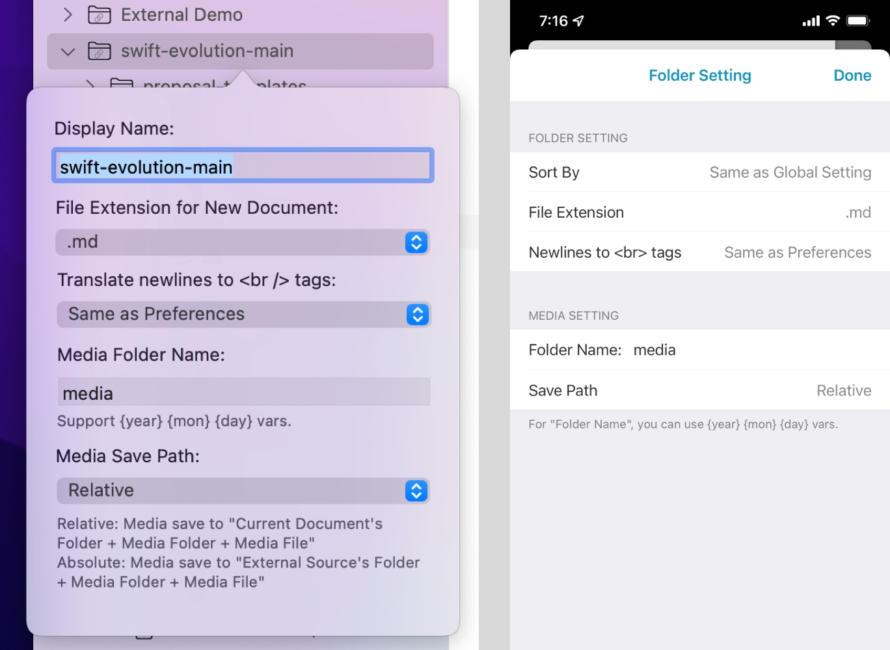
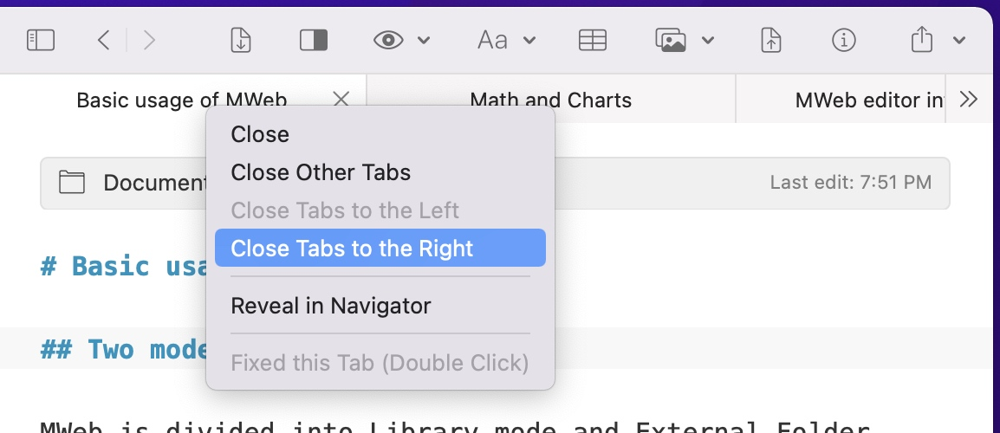

Two modes of MWeb
MWeb is divided into Library mode and External Folder mode.
Library mode: Use categories and tags to manage documents, mainly for note-taking and static blog generation. Currently, only MWeb Pro under macOS has the feature of static blog generation.
External Folder mode: In fact, it is a Markdown editor, which is mainly used to create or edit all Markdown and Textbundle documents in folders on your hard drive.
These two modes can basically meet almost all the needs of using Markdown under macOS/iPadOS/iOS. The two modes are described below.
Library mode
Library mode, the first thing to know is that the current Library is stored in. When you use MWeb for the first time, you will be asked to set the storage location of your documents, you can store the Library in a folder, or in iCloud. In addition, you can check the storage location of your Library at any time in Preferences. Under macOS, you can check it in Preferences - Library & Backup, and on iPadOS/iOS, you can check it in Settings Page - Library. If you want to sync your Library across multiple devices, we recommend storing your Library in iCloud. The following figure shows the result of the Library being stored in iCloud.

Once you know where the Library is stored, you can start to use the Library.
The Library interface of MWeb's macOS/iPadOS/iOS version is shown in the figure below. The interfaces of the three platforms are deeply optimized for each platform. The macOS version of the Library uses a separate window, you can use the shortcut CMD + L to open the Library at any time, or you can use the menu: View - Open Library to open the Library. The Library for iPadOS/iOS is displayed in the Library group on the home page.

Basic usage of the Library
Add a new category: In macOS, you mainly use the right click of the categories tree on the left to add a new category. You can also click the "+" button in the lower left corner to add a new category; for iPadOS/iOS, you can tap the "+" button at the bottom to add a new category.
Add a new document: In macOS, you can use: right click to categorize, click the new document button in the toolbar, or the shortcut key CMD + N to add a new document; for iPadOS/iOS, please tap The "+" button at the bottom to add a new document.
Set document categories and tags: You can click the document information bar at the top of the editor to set the categories and tags of the document, as shown below. This interface can also be called up using the shortcut CMD + 8.

View the outline of the document: As shown below, in macOS, you can click the (i) button on the toolbar to view the outline of the document, or you can use the shortcut CMD + 7. If you want to pin this outline view, you can directly drag it to pin it, or you can use the "View" menu to set the pinned position. In iPadOS/iOS, you can click the (i) button at the bottom of the editor to view the outline.

External Folder mode
External Folder mode is mainly used to create or edit all Markdown and Textbundle documents in folders on your hard drive. The External Folder mode interface of MWeb's macOS/iPadOS/iOS version is shown in the figure below. The interfaces of the three platforms are deeply optimized for each platform. The External Folder mode of the macOS version uses a separate window. You can use the shortcut CMD + E to open the external folder mode at any time, or you can use the menu: View - Open External Folder Mode to open it. The External Folder mode for iPadOS/iOS is displayed in the Folders group on the home page.

Basic usage of External Folder mode
The External Folder mode of MWeb of macOS is a classic two-column structure, the left side is the folder list, and right-click in the folder can complete the management functions such as adding, deleting, and renaming files and folders. Click The "+" button can import folders. In MWeb for iPadOS/iOS, click the "+" button at the bottom to import folders, and you can also add folders to iCloud Drive and Dropbox. Click the "+" button to add a new document, long press on the file or folder in the list to complete the management functions such as adding, deleting, and renaming files and folders.
Each folder imported into MWeb will have setting items as shown below. In MWeb of macOS, right-click the imported folder and select Edit to call up this setting interface; in iPadOS/iOS, click the (i) button to the right of the imported folder on the home page to call up this setting interface .

This interface has a more important setting, which is related to the inserted images, which is "Media Folder Name:", which is known at a glance, and this is associated with the following "Media Save Path:" , this only has two options of "Absolute" and "Relative".
For example, the folder I imported is A, and then there is a file under "A/folder/file.md", if I insert a image named "pic.jpg" in "file.md" , the results of different options are:
- Relative: The image will be saved in "A/folder/media/pic.jpg", and then the generated Markdown will be:
. - Absolute: The image will be saved in "A/media/pic.jpg", and the generated Markdwon is:
![](/media/pic.jpg.
According to this feature, MWeb can well support image insertion, preview and management of static website generation tools such as Octpress, Jekyll, hexo, gitbook, VuePress, etc.
MWeb usage summary
From the above description, you can know that the operation of MWeb in macOS usually uses the menu, toolbar and right click. In iPadOS/iOS, in addition to the buttons in the interface, you can try long press.
Instructions for using the MWeb tab in macOS
Both the External Folder mode and the Library mode of MWeb have the feature of tabs, and the tabs of MWeb have two states: fixed and replaceable.
Directly click on the document in the list of the Library, and the tab that opened is replaceable. The font on the tab will be lighter and italic. If you try to click on another document, you will know what I mean by replaceable. Only one replaceable tab can exist for a window.
If you want to make it a fixed tab, double-click the document or tab, or you can right-click - open in new tab. Also, as long as the document is edited, the tags will automatically become fixed.
The purpose of this design is to achieve such a process: when clicked, the document is displayed, and if I decide to use it or to display it all the time, make this tab fixed.
You can drag and drop left and right to change the order of the tabs. If there are too many open tabs, you can also right-click on the tab to perform some management, as shown in the following figure:

Other Tips: If you have too many tabs open, you can move the mouse over the tab and then slide the touchpad left and right to view the left and right hidden tabs.